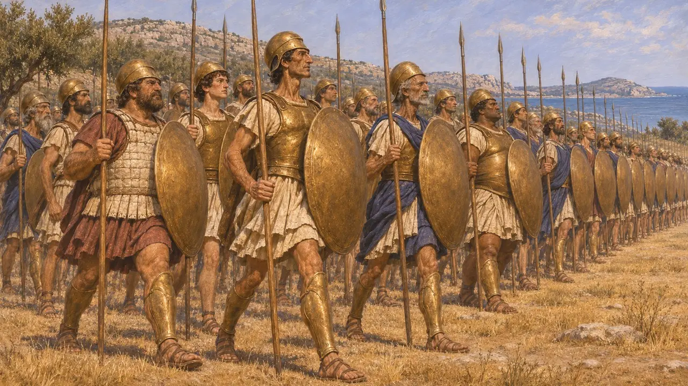
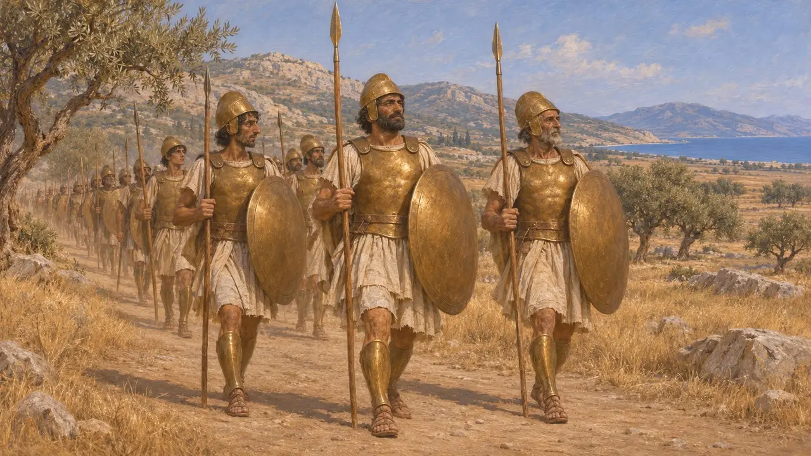
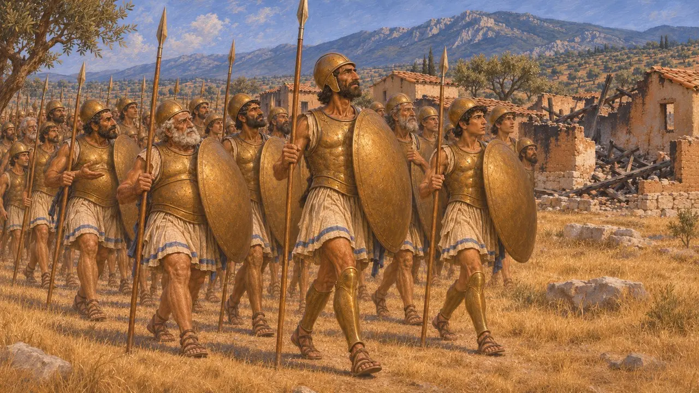
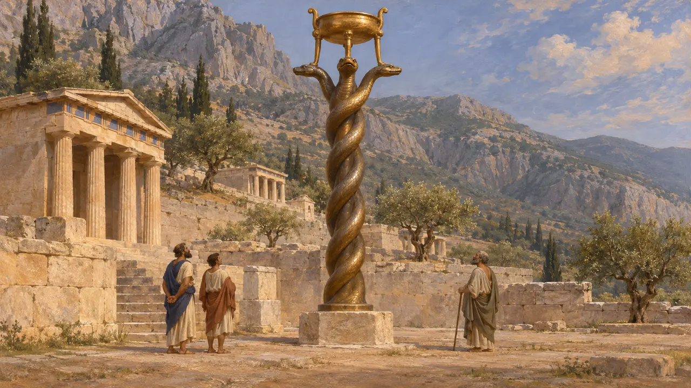
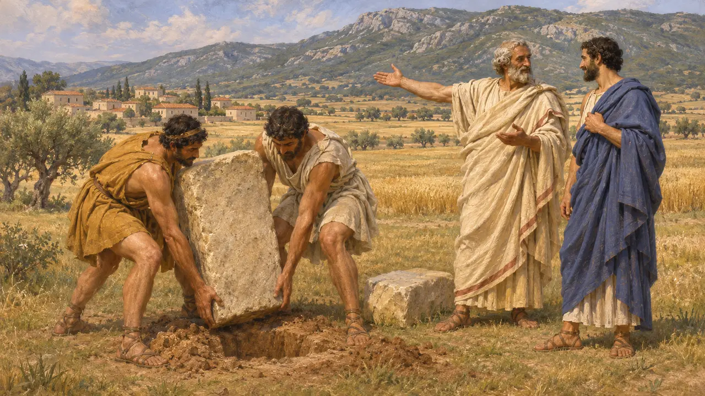
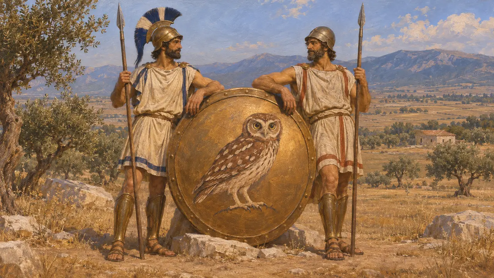

普拉提亚是波奥提亚的一座小城，位于基泰戎山北坡，与其强邻底比斯不睦，而与雅典结盟。公元前490年，普拉提亚公民是唯一在马拉松与雅典人并肩作战的希腊人；公元前479年，对马多尼乌斯的决定性陆战就在他们的领土上展开。没有任何波斯文献提到他们，因此他们的故事几乎全部来自希腊作家。
游戏中： 游戏将普拉提亚呈现为唯一在马拉松与雅典并肩作战的城邦，也是公元前479年的战场。这两点都与希罗多德的记载相符：他说斯巴达人直到马拉松之战结束后才赶到。

一座倒向雅典的波奥提亚城市
古代记述希罗多德称，普拉提亚人受底比斯所迫，起初向斯巴达王克列欧美涅斯请求归附。克列欧美涅斯却把他们转介给雅典，意在挑起雅典与底比斯相争。公元前490年波斯人在马拉松登陆时，普拉提亚人倾城出兵，担任雅典阵线的左翼。希罗多德还说，此后雅典人在盛大节庆的祈祷中都会为普拉提亚一并祈福。
Herodotus 6.108, 6.111

难以确定的年代与数字
争夺中修昔底德将普拉提亚与雅典结盟的时间定在公元前519年。也有史家倾向于约公元前509年，因为那时克列欧美涅斯在希腊中部的活动有更多史料佐证。希罗多德并未给出普拉提亚人在马拉松的兵力。晚得多的作家科尔涅利乌斯·奈波斯和查士丁称他们派出了1000人，现代著述常引用此数，却无从证实。
Thucydides 3.68; Cornelius Nepos, Miltiades 5; Justin, Epitome

公元前480年遭焚，公元前479年得以复仇
古代记述希罗多德称，公元前480年，普拉提亚人曾在阿尔忒弥西昂协助为雅典战船划桨，随后返乡转移家眷与财物，而未随船队驶往萨拉米斯。薛西斯的军队听从底比斯人的建议，焚毁了他们的城市。公元前479年，他们派出600名重装步兵加入希腊联军，在自家土地上击败了马多尼乌斯。修昔底德称，斯巴达摄政保萨尼亚斯随后立誓尊重他们的独立。
Herodotus 8.1, 8.44, 8.50, 9.28; Thucydides 2.71

蛇柱上的名字
见于史载青铜蛇柱以公元前479年的战利品铸成，献于德尔斐，柱上列出了与波斯人作战的城邦，普拉提亚人也在其中。蛇柱至今尚存，虽已残损，仍立于伊斯坦布尔的竞技场——它是在君士坦丁时代被移到那里的。没有任何波斯文献提及普拉提亚；国王的铭文只记录土地和民族，不记希腊小城。
Serpent Column inscription (R. Meiggs and D. Lewis, A Selection of Greek Historical Inscriptions, no. 27); Herodotus 9.81

被挪动的界石
后世传说约六个世纪后写作的普鲁塔克记载，有神谕向阿里斯提德和雅典人许诺：若在本国土地上、在得墨忒耳与科瑞的平原上作战，便能取胜。他说，普拉提亚人移走了自己的界石，把战场让给雅典，从而解决了这一难题。这个故事更像是对两城友谊的颂扬，而非可靠的史实。
Plutarch, Aristides 11

名称旁的徽记
争夺中普拉提亚在公元前490年没有自己的钱币，游戏中普拉提亚人与雅典人共用猫头鹰，因为他们曾在马拉松并肩作战。希罗多德说，此后雅典人在节庆中总为普拉提亚人祈祷。
Herodotus 6.108, 6.111
来源
- Herodotus, Histories, books 6, 8 and 9
- Thucydides, History of the Peloponnesian War, books 2 and 3
- R. Meiggs and D. Lewis, A Selection of Greek Historical Inscriptions, 1988
- Plutarch, Aristides
- Cornelius Nepos, Miltiades
- P. Green, The Greco-Persian Wars, 1996